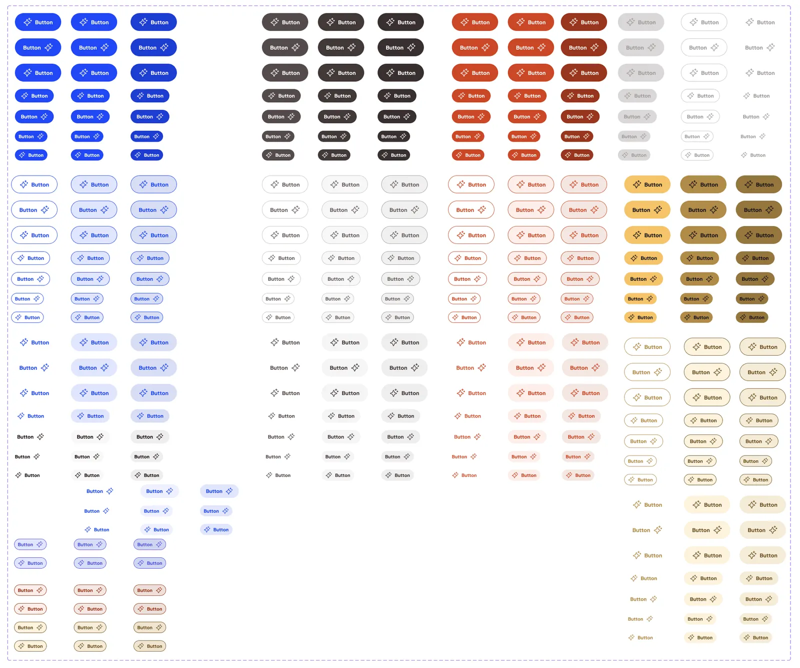
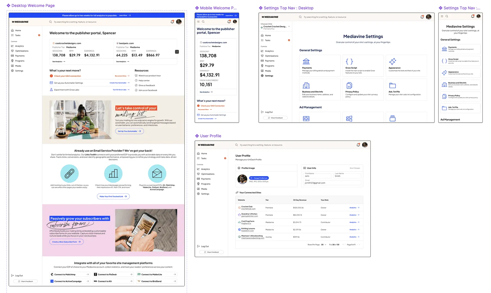
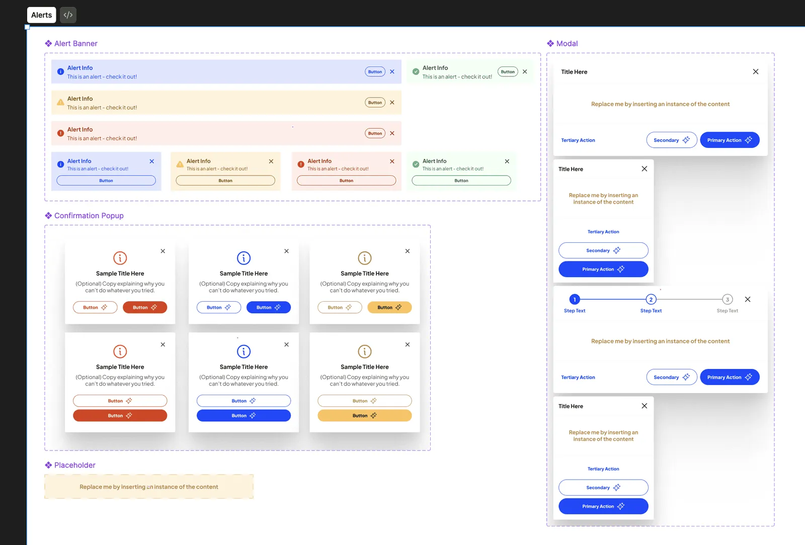
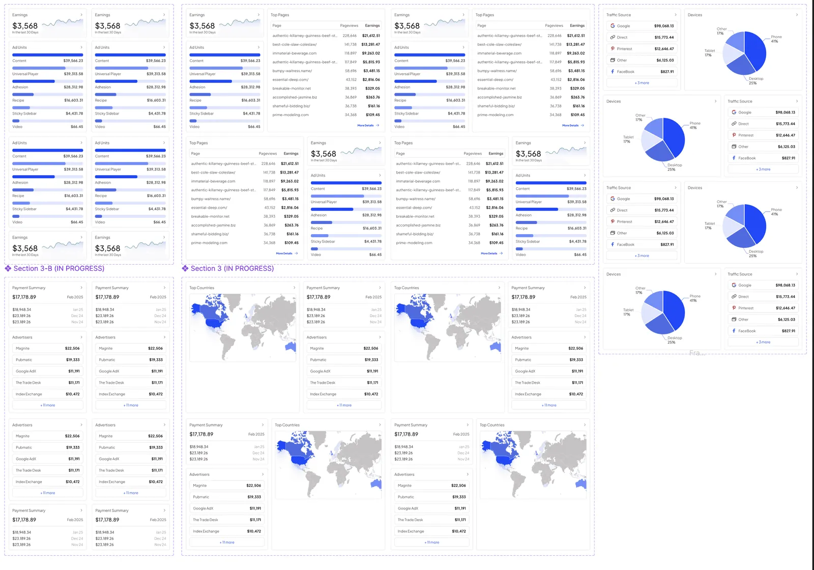
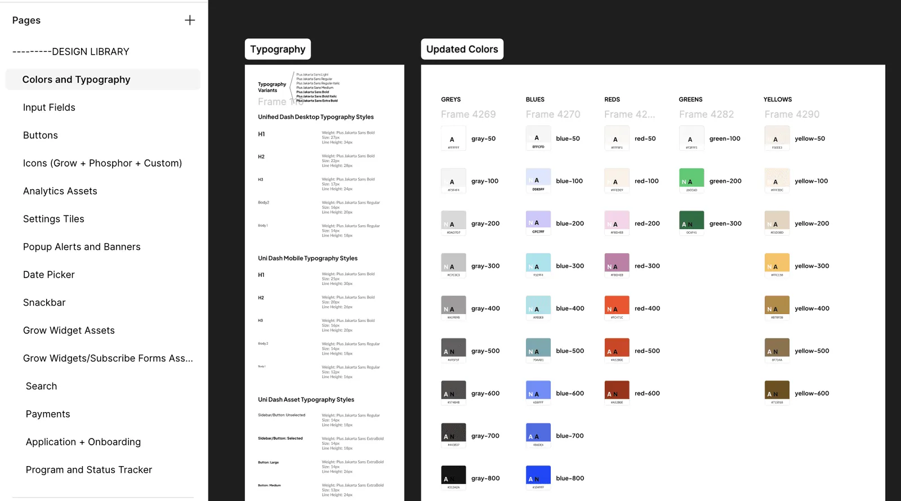

Mediavine Design System
When my design team began working on early designs for Mediavine’s updated analytics dashboard, I knew we’d need to rethink the way we structured and organized our design library in Figma. This was primarily, because the dashboard was being completely rebuilt and the engineers were no longer utilizing the legacy components we used for our previous dashboard. Essentially, this was our opportunity to start fresh and create a design system that we’d love using.

I had three main guiding principles for our design system:
- It should be easy for engineers to follow
- It should be easy to add to and edit over time
- It should only include the components we actually use and need
I’m proud of the system we built together (myself and the three senior designers on my team) and with our careful planning it became the cornerstone of the entire dashboard project. Below I’ll walk through some of the key decisions I made and explain what made this design system such a success.
The Foundation:
We started by leveraging the Minimal UI React kit for two reasons:
- It came with a Figma file of components we could start with which was essential considering this dashboard project had a very tight deadline.
- It’s based on MUI so our engineers could easily get set up without having to build custom components from scratch.
This kit allowed us to establish our own style and theming while taking advantage of the patterns and accessibility standards set up by MUI. And, again, since we were working with a very tight deadline, we didn’t have extra time to spare designing custom components and putting them in front of stakeholders for approval. We also chose to use the Phosphor icon pack since it had more than enough icons for the project and the styling most closely matched our other brand elements.
Finally, for the charts and graphs we used throughout the analytics screens, we used the Nivo library which made building the graphs simple for the engineers, and easy for us to style. No need to reinvent the wheel for a line graph or pie chart.

Setting Up The File
Once we were at the stage of setting up our design system, we had already gotten buy-in on our initial screens and had a pretty good idea of what we were going to be building for our users. That made it easy to identify which components from the Minimal UI kit we’d actually need and which ones we could omit (for now).
We started by creating a new Figma file and making pages for each component type we wanted to copy over. From there, we edited the fonts, colors, border radius, and other styling to match our brand identity. We tested each color for accessibility and also made sure to include dark mode theming as well.
Separating each component into its own page made navigating such a large file actually manageable. Believe it or not, I’ve seen systems that have components all on one page and not only does the file take an eternity to load, but it also makes it challenging to find what you need. Save yourself the headache and break them out from the beginning.
Also, every component's state was clearly defined including shadow effects, hover states, and text sizes based on responsiveness. Because things were so well-defined, our engineers rarely had to come back to us with questions about a component's styling or behavior.


Best Practices
I strongly believe in the value of an atomic design system, so in addition in creating individual components (Ex. buttons, text fields, etc.), we also created patterns that leveraged them (Ex. modals, date pickers, tables), and even entire screens which we called “skeletons” that served both as examples of how the pieces should all fit together, and also as starting points when the team wanted to build off of an existing design. Most importantly, every single element in these skeletons and patterns were global components that could be swapped out, added, or removed as needed. No one-off or detached designs here!
If we ever came across a use-case where only a custom component would work, we would first make sure that it followed all of the same styles as the rest and that it got documented in Figma along with the other components. There were only a handful of these (Ex. robust date picker, a widget to track your earnings, marketing banners), but because of the way they were cohesively incorporated into the system, you would never know they weren’t a part of the original set.
Integrating with Engineering
Arguably the most important part of any design system is how easily it can be utilized by the engineers building the designs. In our case, I worked with our front-end team to ensure every color, typography style, and css class was well-defined and consistent so we could be sure the components engineering built would match our designs (a big issue in our legacy system).
Eventually, our design system was so consistent and well-built, that our engineering teams were able to translate certain screens of our legacy dashboard to our new dashboard without the Design team having to first create the screens. Of course, we would always review the work and check for usability, but overall this system allowed us to work quickly and seamlessly with our engineers. It was a win-win all around!


Conclusion
This design system has now been used for over two years and you can see it in action within the live Mediavine Dashboard. Overall, I'm very happy with the system, specifically how it's organized, how our engineers have been able to utilize it, and how flexible it has been to work on. There are a few things I would change if I were to start the project over that I'll highlight below.
What I would do differently:
- The system was created pre-Figma Slots, but if I were to do a big update or start over, I would make it with Slots so the patterns are even more interchangeable.
- Figma Make also wasn't widely available at the time this system was created. Once we did have access to it, though, we would use Make to create interactive prototypes for our engineers and stakeholders to show specific behaviors and user interactions we wanted to achieve.
- I would have loved a better system for letting our engineers know what changes had been made to components so they could maintain parity with the current build. Now, Figma MCP + Claude Code can call out those diffs, but at the time, we were manually highlighting changes and annotating them for our devs.